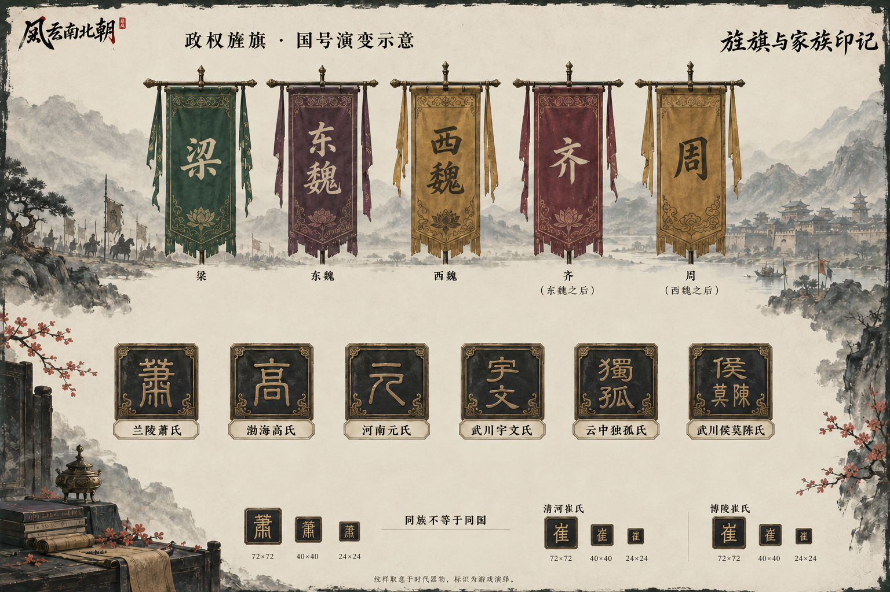
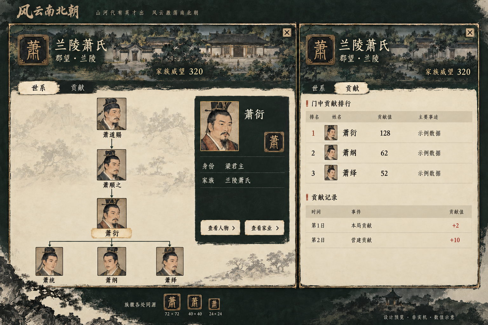
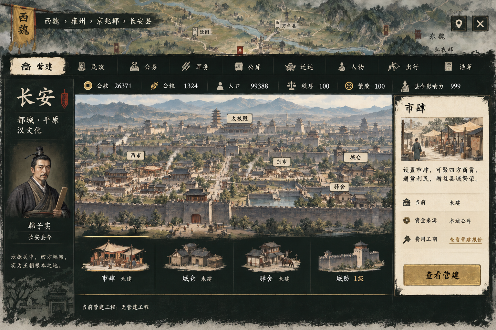
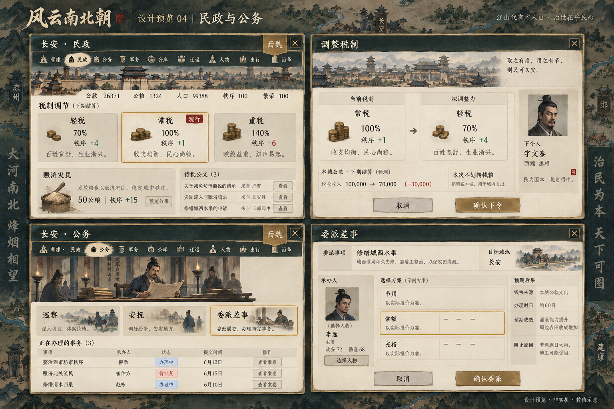
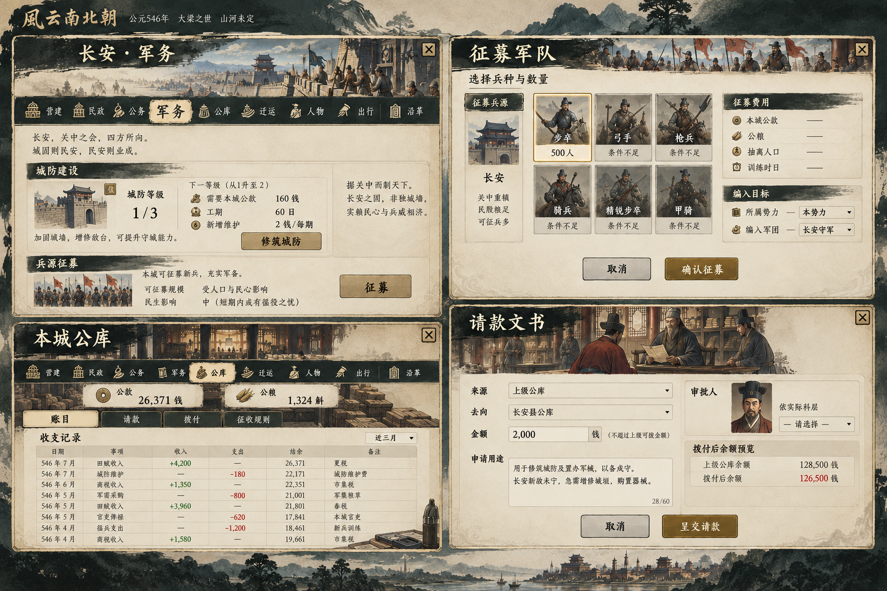
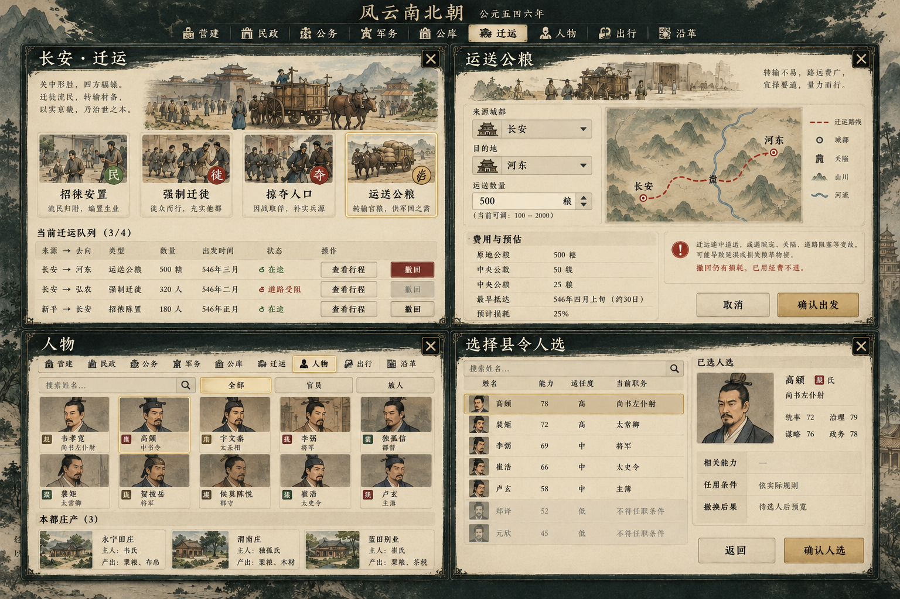
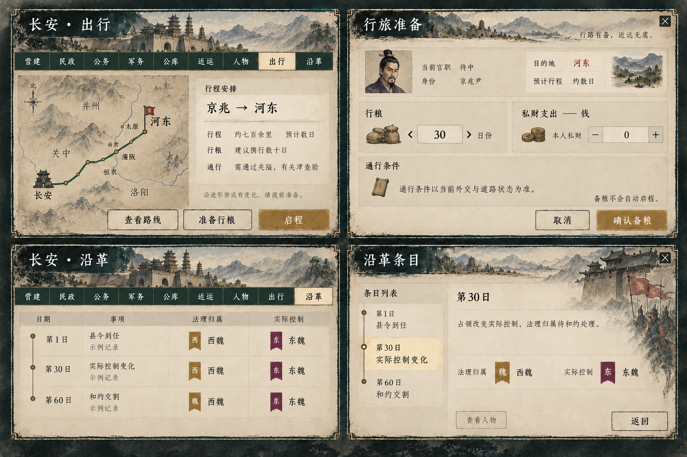
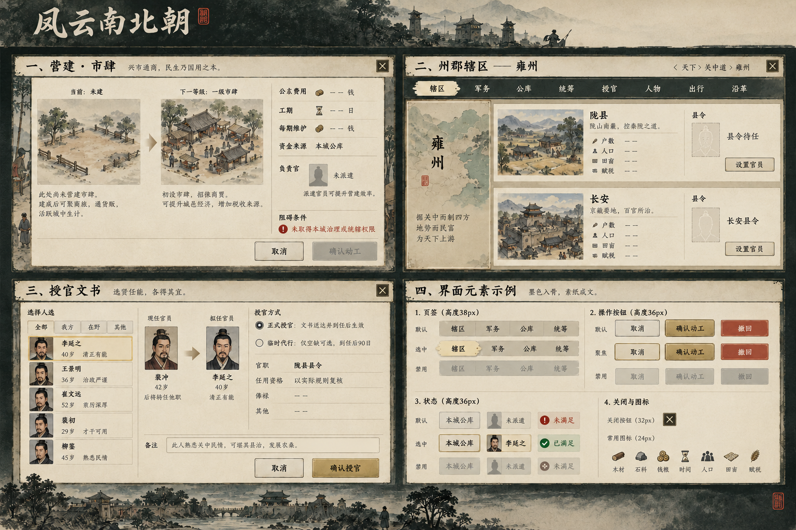

可点击的控件尺寸样板
以下只展示样式与选中状态，不连接游戏，也不执行任何行动。浏览器100%缩放时检查尺寸；图片缩放不作为CSS尺寸依据。
城市页签 · 38px高 / 20px图标 / 14px文字
已选：营建。仅展示控件状态。
操作 · 36px高；关闭 · 32px
姓氏印记 · 同源、多尺寸简化
这里是尺寸示意；正式材质见图01。复姓、族源和同姓分支保留完整名称。
政权旌旗与家族印记
旗帜、单姓／复姓、同姓支系与三档尺寸。具体标识为游戏美术演绎，不是历史国旗或家徽复原。

点击查看原图 · 生成图的细字／细微状态可能有偏差，控件规格和既有规则优先
家族详情：世系与贡献
两张独立页面，共用方形姓氏印记。示例数据与省略的族人不改变真实家谱。

点击查看原图 · 生成图的细字／细微状态可能有偏差，控件规格和既有规则优先
城市外壳与营建
九个页签、紧凑资源摘要、城景与建筑入口。最终旗帜和关闭按钮归属城市抬头；查看营建使用次按钮，城防仅跳转军务。

点击查看原图 · 生成图的细字／细微状态可能有偏差，控件规格和既有规则优先
民政、公务与办理文书
左上民政，右上税制确认，左下公务，右下委派差事。人物、方案、预算及时间以运行规则替换示意。

点击查看原图 · 生成图的细字／细微状态可能有偏差，控件规格和既有规则优先
军务、公库与请款
左上城防征募入口，右上征募，左下公库，右下请款。审批者由实际科层决定，不采用图内多余的审批人下拉框。

点击查看原图 · 生成图的细字／细微状态可能有偏差，控件规格和既有规则优先
迁运、人物与选人
左上迁运，右上公粮运输，左下驻留人物和庄园，右下独立的县令选人示例。运粮不新增必须选承办官的流程。

点击查看原图 · 生成图的细字／细微状态可能有偏差，控件规格和既有规则优先
出行、备粮与沿革
左上出行，右上备粮，左下沿革，右下记录详情。备粮与启程分开；示意沿革不当作史料或本局记录。

点击查看原图 · 生成图的细字／细微状态可能有偏差，控件规格和既有规则优先
营建文书、辖区授官与细节
左上营建，右上州郡辖区，左下授官，右下控件状态。正式授官依送达及赴任；临时代行到任后90日。

点击查看原图 · 生成图的细字／细微状态可能有偏差，控件规格和既有规则优先